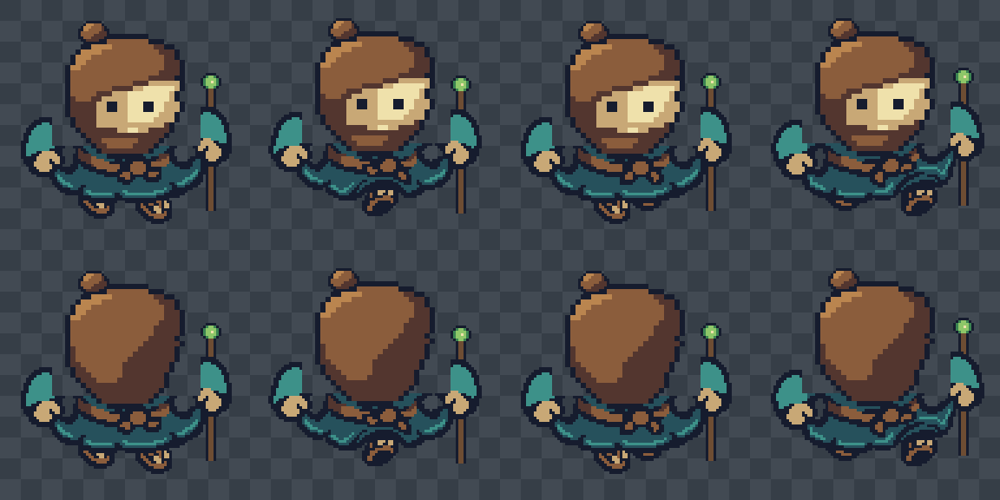
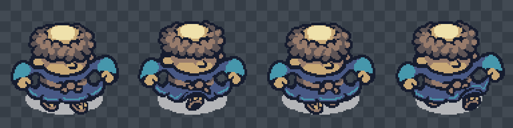
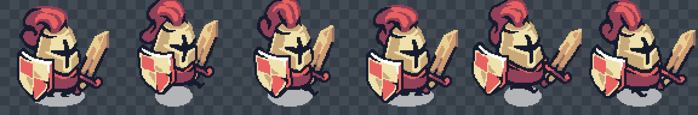

12 FPS, native 192px cells; original four run poses left to right. Row 1 front, row 2 rear. Fixed anchor [96,132].
Original Monk phases: right contact · passing · left contact · passing → right contact



Native robe, legs, sleeves and gait; edited brown hair, beard, bun, sea-green costume and staff. Rear has a separate back-of-head drawing.